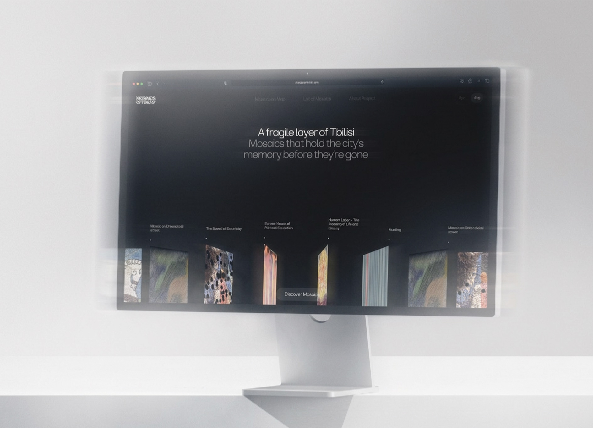
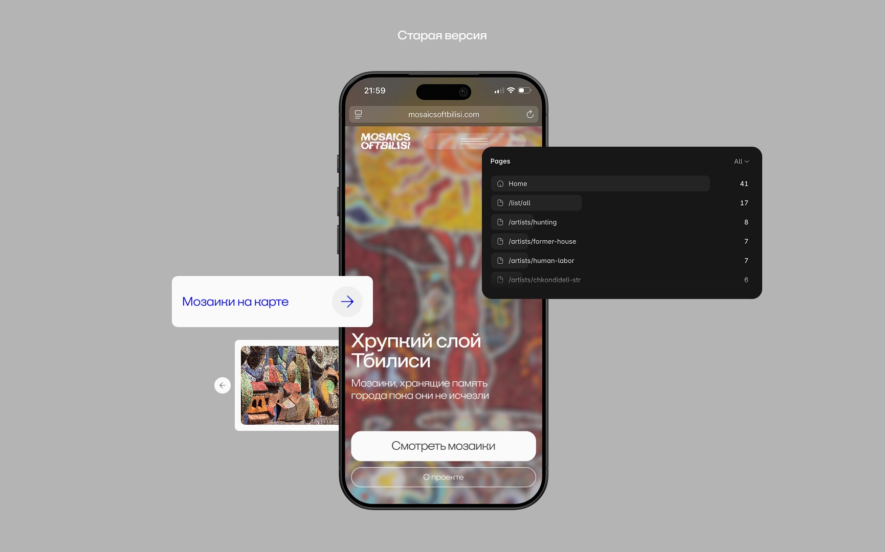
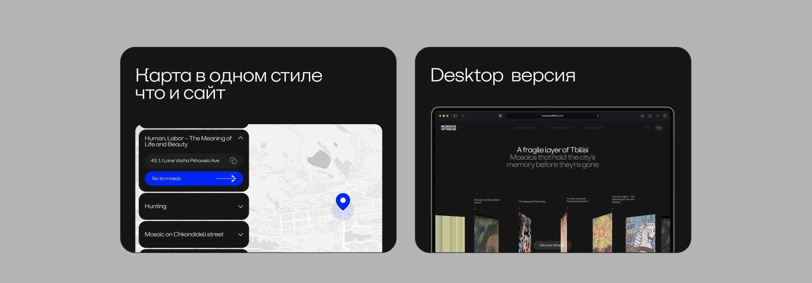
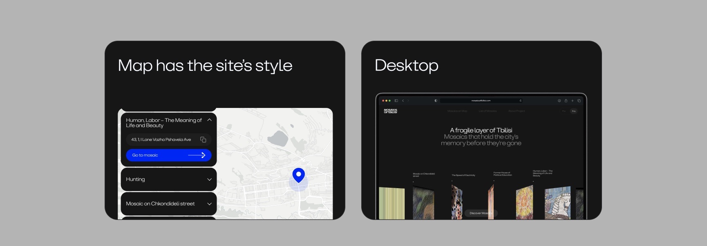
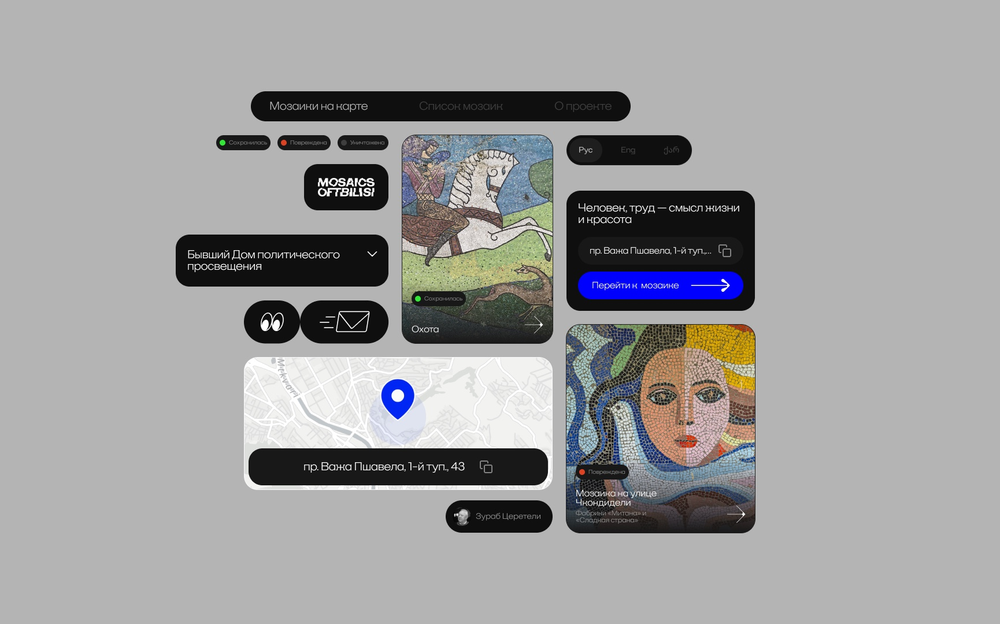
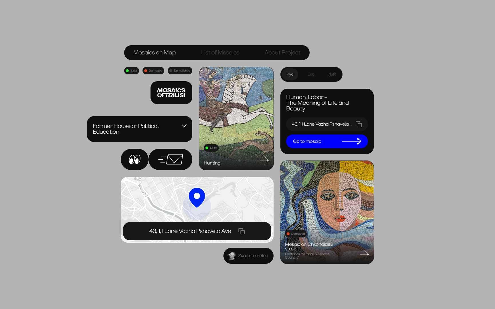

Мозаики Тбилиси
Двуязычный сайт и карта мозаик города.
Моя рольПродуктовый дизайнер
Задача
Сделать редизайн старого сайта с мозаиками Тбилиси.
Результат
Посещений выросло на 526% за первые 19 дней.
Аудитория
Три группы с разными целями.
Ценители мозаики и визуальной культуры: ищут конкретную работу и хотят рассмотреть её.
Туристы: встретили мозаику на улице и хотят быстро понять, что это.
Неравнодушные горожане: хотят знать, что происходит с мозаиками их города.

Что было не так

Решение
Карта внутри сайта
Desktop версия


Принцип оформления

